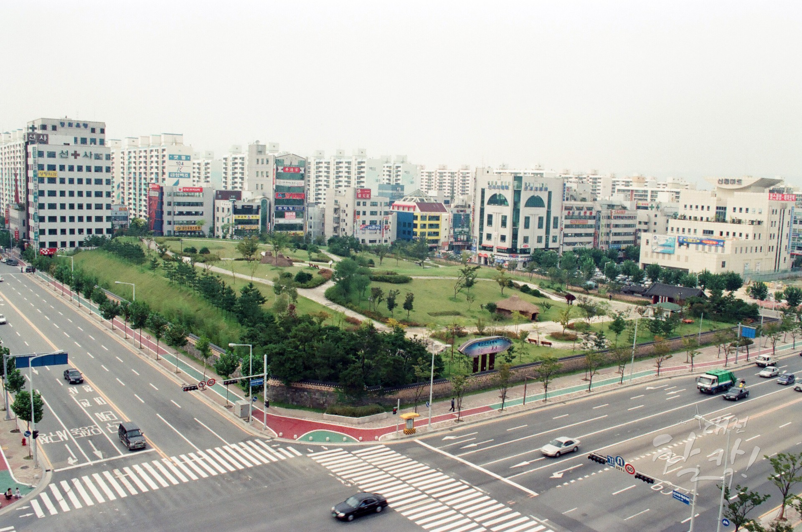
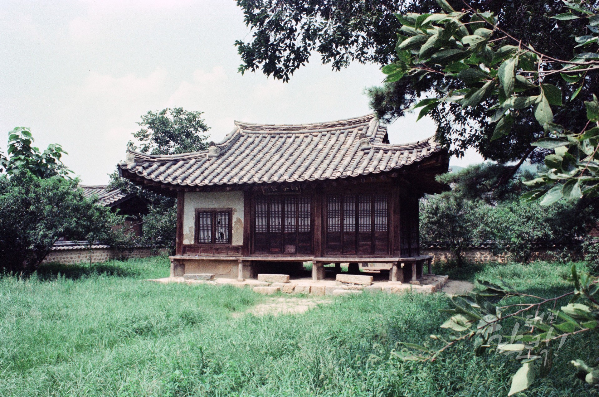

대전의 역사
선사시대부터 현대까지 대전의 역사 정보입니다.

선사 시대
대전의 시작
둔산동 선사유적지 등에서 다양한 유물이 발견되어 대전에 아주 오래전부터 인류가 살았음을 보여줍니다.
_2018-00-00_0.jpg)
삼국 시대
백제의 요충지
백제 시대에는 우술군이라 불렸으며, 국경을 마주하는 군사적 요충지로서 계족산성 등이 축조되었습니다.

고려·조선 시대
회덕현과 진잠현
고려와 조선 시대에는 회덕현과 진잠현 지역으로 나뉘어 발전하였으며, 동춘당 송준길과 우암 송시열 학자가 활동했습니다.

근대 시대
교통의 중심지
1905년 경부선 개통과 1914년 호남선 개통으로 교통의 중심지가 되었으며 충청남도청이 대전으로 이전했습니다.
_2017-00-00_0.jpg)
현대 시대
과학도시 대전
1993년 대전 세계박람회(EXPO)를 성공적으로 개최하였고 대덕연구단지가 들어서 과학의 중심도시가 되었습니다.